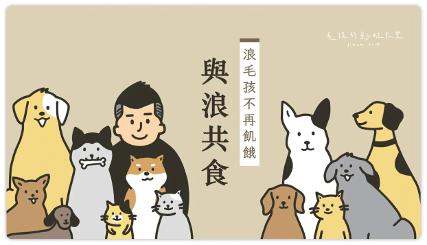
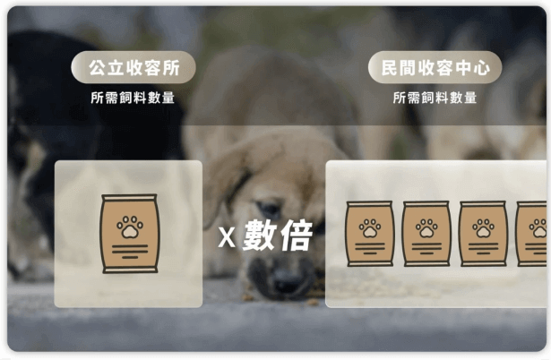

【I got you 浪我罩你】線上訂閱中途計畫
浪浪在台灣的數量居高不下，除了收容空間嚴重不足，飼料來源更是最大的問題，我們是毛孩的彩虹天堂，我們希望浪浪也能有健康穩定的糧食來源，也能有不再飢餓的一天。
NT$500
贊助人數 4
招募時間 2022/08/17 12:00 - 2022/09/21 23:59
▍溫飽的一天，何時到來？
#浪浪在台灣的數量居高不下，至2022年5月，台灣農委會推估目前的流浪狗數量將超過15萬5000隻，未來更預計高達16萬隻以上。
全台各級收容中心目前實際收容數量約7400隻，若每隻浪浪每月需要食用至少8公斤的飼料方能溫飽，初步估計，台灣的流浪動物收容中心裡的浪浪們，每年至少就需要食用約714噸的飼料。
>參考成犬每日建議約200~300克即每月約6~9公斤可飽餐。
>成犬體重以15~20公斤基準，再依照每日建議量做推算。
>上圖來源：https://asms.coa.gov.tw/amlapp/App/PetsMap1.aspx
(參考全國動物收容管理系統2022/07/15之數據做推算)

除了陸續協助解決全台灣各地收容所的糧食需求，同時也與各地的中途之家接洽，統計所需要的飼料數量，便能依照每月集資所得的金額，進行新鮮飼料的採購、合理地分配並提供給台灣各地所需要的收容所及狗園，讓有限的資源能有效地分配到真正有需要的地方。不僅僅是為了減輕狗園飼料壓力，更衷心期盼能讓每一隻浪浪都能得到溫飽。
▍關於毛孩的彩虹天堂#
毛孩的彩虹天堂是一群來自台灣各地有同樣理念的夥伴組成的團體，我們希望每隻流浪的毛孩們在生命到了盡頭時，不再像垃圾一樣被丟棄。
我們關注毛孩、浪浪議題，期盼有天，浪浪能不再流浪；更希望有天，世界不再有浪浪。
客服聯絡方式
如果對集資計畫有任何疑問，可至以下三種方式聯繫我們。
►集資頁面『傳送訊息』給提案人。
►臉書粉絲專頁私信詢問：https://reurl.cc/bkM9AX。
►寄送郵件到提案人的信箱：pet.paradise0507@gmail.com。